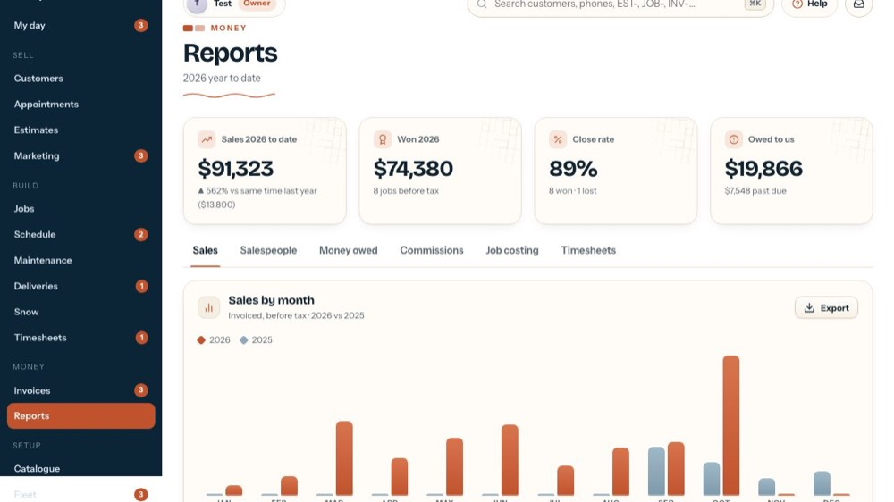
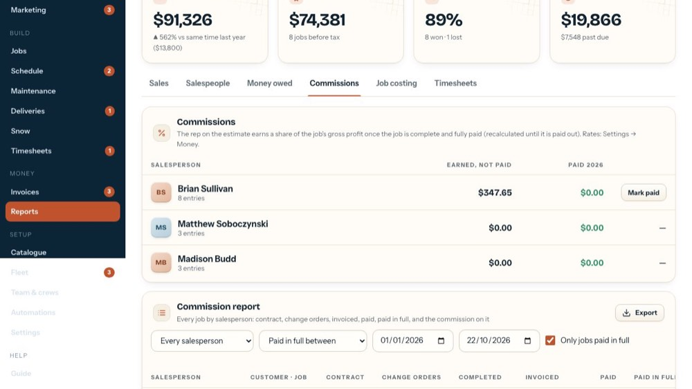
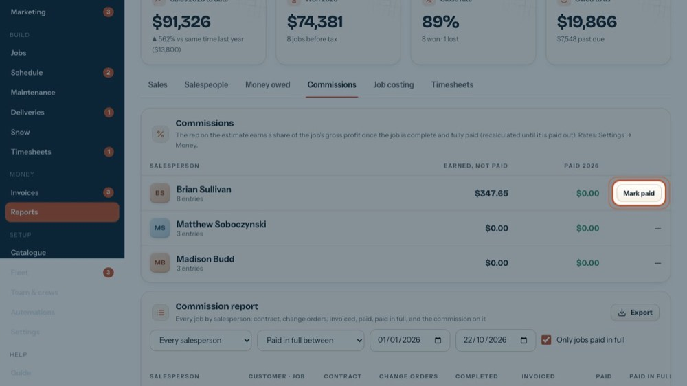
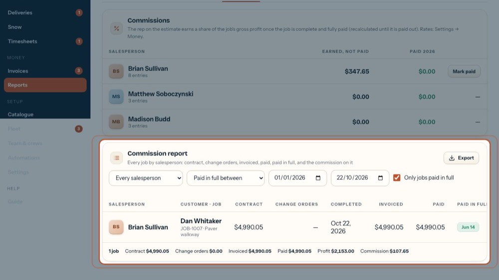
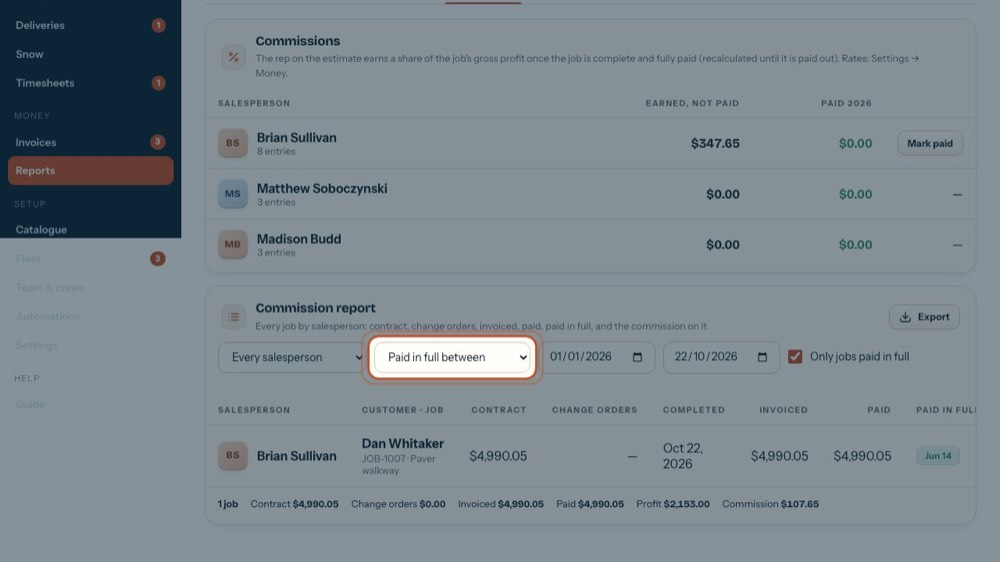
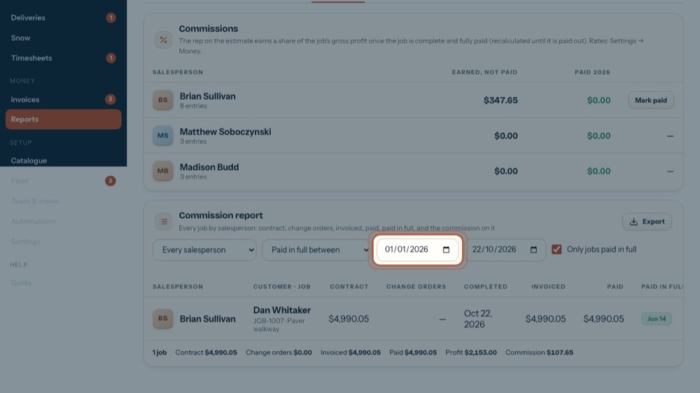
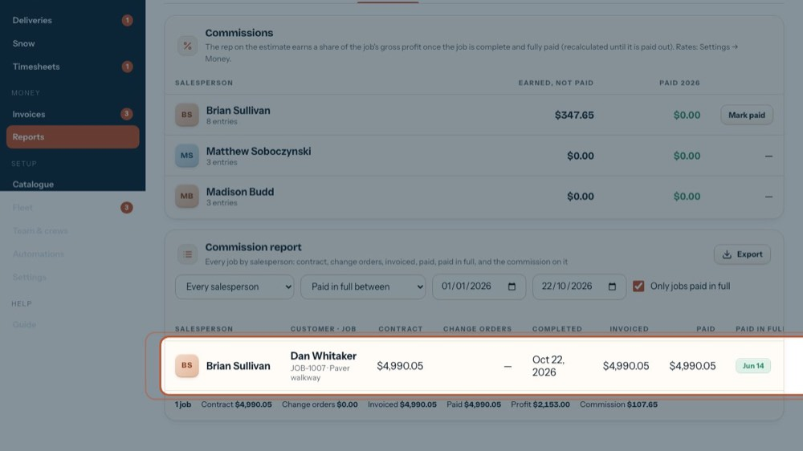
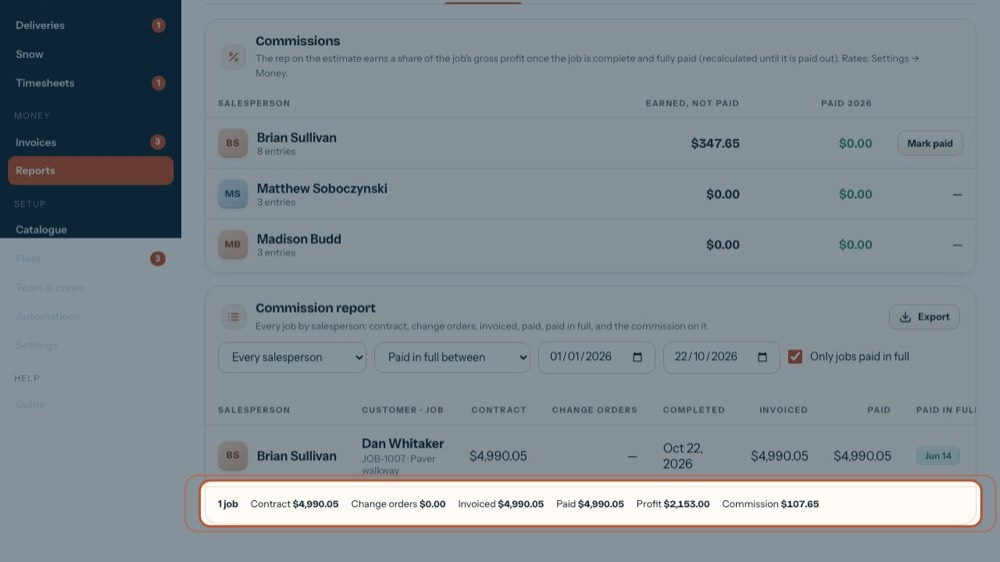
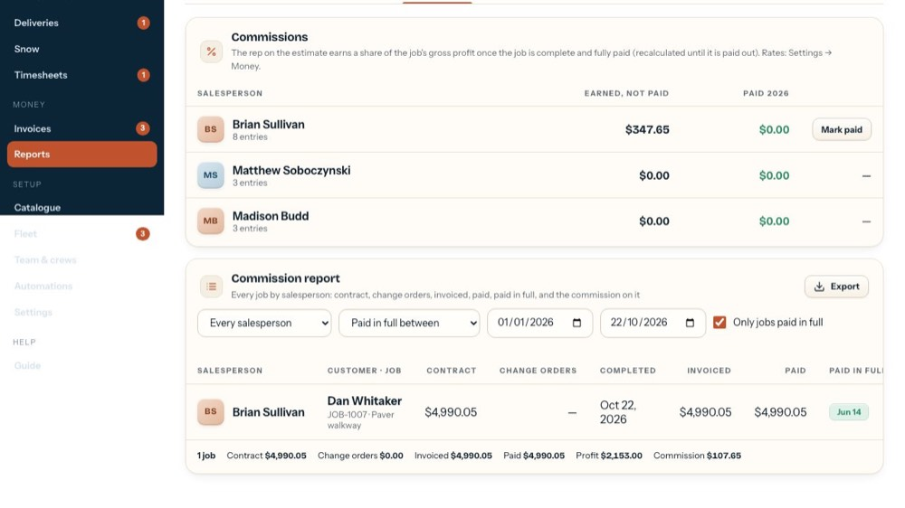

Commission report: filter, check, export for payroll
In the office app, press Help and type commission report
: the tour plays on your own screen, with your own data.
-

1Commissions
Open the Commissions tab on Reports.
-

2Earned and paid
The salesperson on the estimate earns it. The line above says when and on what (profit or sale); rates per salesperson are in Settings, Money.
-

3Mark paid
After paying a salesperson, Mark paid moves all their earned entries to paid, after asking. The tour doesn't press it.
-

4Commission report
Every job by salesperson: contract, change orders, invoiced, paid, paid in full, and the commission on it.
-
 5
5Salesperson
Every salesperson, or pick one. Owner and office see this filter; a salesperson sees their own jobs.
-

6Which date
Paid in full between, Completed between or Sold between: the date the range below filters on.
-

7From and To
The date range. It starts at January 1st of this year through today. The list updates as soon as you change it.
-
 8
8Only jobs paid in full
Untick it to see every job in the range, paid or not; unpaid ones show 'Not yet'.
-

9One row per job
Contract, change orders, completed, invoiced, paid, paid-in-full date, the base (profit or sale), rate and commission, with its status. Click the customer to open the job.
-

10Totals
The totals for everything in the list: jobs, contract, change orders, invoiced, paid, profit and commission.
-

11Export for payroll
Downloads the report as an Excel file, one row per job. The tour doesn't download it.